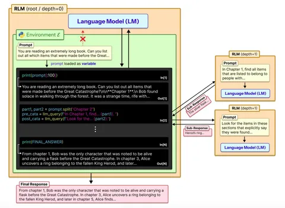
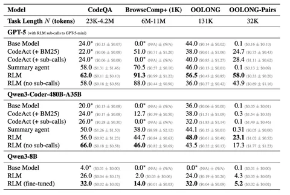
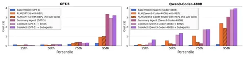

В последнее время всё чаще обсуждают проблему длинного контекста. Большое количество токенов просто физически не помещается в модели, а с увеличением контекста зачастую падает качество. Авторы сегодняшней статьи предлагают решение: дать моделям правильные инструменты.
Как это устроено: у модели есть промпт с описанием задачи и доступных тулов. Первый — это Python REPL. Модель может исполнить произвольный код, где в переменной
prompt сохранён весь длинный промпт.Второй тул — это вызов языковой модели на глубине 1 (
depth=1) с поданным фрагментом длинного промпта. Это напоминает субагентов в агентах для написания кода (Claude Code, Codex), но есть важное отличие. Вызов llm_query живёт «внутри» REPL, а значит модель может встроить его в цикл, условие или любую другую программную конструкцию. В Claude Code или Codex субагент — это отдельный тул-колл, который модель вызывает из контекста напрямую, без программного контроля. Такая модель называется рекурсивной (RLM), и их может быть несколько в рамках одного цикла. RLM не обязательно должна быть идентична изначальной. Главное, что у неё пустой контекст.Суть метода, предложенного авторами статьи, в том, чтобы дать модели возможность запускать себя рекурсивно в той же программной среде (изображение 1). Среди бейзлайнов авторы рассматривают вариант без самовызовов (только модель с большим промптом и REPL), summary agent (суммаризация контекста, не поместившегося в модель) и CodeAct (код плюс ретривал через BM25).
Нюансы разницы RLM и типичных кодовых агентов до сих пор вызывают дискуссии с авторами в твиттере, и хайп вокруг статьи и идеи только растёт. Примеры тут, тут и тут.
Эксперименты проводили на Qwen3 и GPT-5 (изображение 2). На бенчмарке BrowseComp+ (контекст 6–11 миллиона токенов, нужно найти один релевантный документ из тысячи и ответить на вопрос) базовые модели невозможно запустить — контекст просто не влезает. RLM здесь работает.
Но поиск по длинному контексту — не единственная задача, которую решают RLM. Бенчмарк OOLONG требует семантической обработки фрагментов текста и их агрегации. Сложность линейная относительно длины входа. Здесь RLM без самовызовов уступает даже базовой модели, потому что задача требует «видеть» весь контекст. RLM с самовызовами заметно выигрывает у всех бейзлайнов.
Самый показательный результат на OOLONG-Pairs. Здесь нужно сравнивать пары фрагментов, то есть сложность задачи квадратичная. Базовая модель и summary agent выдают результат около нуля. RLM с самовызовами решает эту задачу, программно организуя квадратичное число вызовов через код в REPL. Это класс задач, недоступный другим подходам.
По стоимости RLM с самовызовами зачастую сопоставима с базовой моделью, хотя со сложностью задачи стоимость растёт (изображение 3).
Разбор подготовил
Душный NLP


